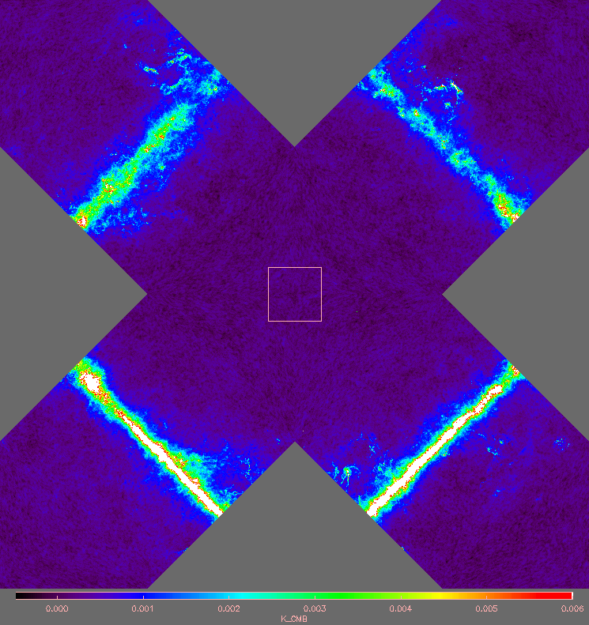

Ximview procedure details
This page explains how to exploit some of the less obvious features of ximview.
Data exchange with the command line
If ximview is already running, as well as loading data from files, you can transfer an image from the IDL command line to a new tab by simply running ximview again:
HIDL> ximview, new_image, range
new_image can be any of the input options available on initial startup, but since file I/O is most conveniently done by the Load FITS menu option, this is most useful for on-line data. All the command line options are available. However, unless /OVERWRITE is set, the options specifying the HEALPix projection are ignored, and the projection will conform to that for the images already loaded.
You can also extract an image from ximview with the
ximget function:
HIDL> image = ximget('Temp')
The argument specifies which tab to extract. It is therefore possible to load images into Ximview, examine them, extract them to the command line and perform further processing (e.g. take the difference, extract a dipole, etc), and re-display the result without the overheads of file I/O and conversion from pixel list to grid.
Slices of multi-dimensional images
If your dataset is an image with more than two dimensions, you can load a subset of the image slices using the COLUMN keyword on the command line, or the equivalent "Columns/Slices" box in the Load FITS dialog box.
The numbering starts from 1 for the first slice (i.e. FITS-style rather than IDL-style), and all dimensions higher than 2 are collapsed into a single third dimension. For instance, if your third and fourth dimensions are STOKES (planes 1 to 4 representing I,Q,U,V) and FREQUENCY (100 channels), then slices 40, 41, 42 would pick up Stokes V for frequency channel 10, and Stokes I and Q for frequency channel 11.
Ximview selects slices from multi-dimensional arrays of HEALPix datasets in a similar way; the only difference is that dimensions higher than 1 are collapsed, since a HEALPix "map" is stored in a one-dimensional array.
Image alignment
Ximview keeps all images aligned, so that when swapping between tabs, the same region is displayed in each case. This is only possible if the images are all the same size, and if they have coordinate information it must be consistent. All images loaded after the initial set-up, via Load FITS or Load image file on the file menu or via running ximview again, are checked for agreement and will be rejected if there is a serious disagreement. Warnings are issued if the coordinates disagrees in that one or other image does not have coordinates properly set (including astrometry keywords for astronomical images). Exception: if only one tab is displayed, it can be replaced with all these checks ignored if /OVERWRITE is set on the command line.
HEALPix Projections

All-sky map displayed in the Mollweide projection
HEALPix is not an image format but a way of precisely describing a pattern of equal-area pixels on the sphere, with the pixel size defined by the Nside parameter (valid values are any power of two), with a total of 12 Nside2 pixels over the whole sphere. HEALPix data is stored as a one-dimensional list of pixel values, usually in a FITS binary table extension. For display purposes the pixel values are interpolated or binned into some projection of the sky onto a plane, most commonly the Mollweide projection, as shown at right.
All-sky map displayed in the Healpix grid projection.
Ximview uses one of two related projections that turn the diamond-shaped HEALPix pixels into squares, so that they can be mapped one-to-one onto the display pixels. The default, "GRID", is the HEALPix projection defined by Calabretta & Roukema (2007), which has FITS World Coordinate System code 'HPX'. This is a 5 × Nside square grid with the zero of latitude running diagonally from top-right to bottom-left. When data is loaded in this format, you can pan seamlessly around the sky: moving through the top-right of the map automatically brings you back to the bottom left. This projection is relatively inefficient in data storage: of the 25 squares only 13 are occupied and this includes one that is duplicated at top right and bottom left. This is the default HEALPix projection for ximview.

All-sky map displayed in the Healpix butterfly projection. The square shows a 512 × 512 pixel field of view.
You can also choose the "butterfly" projections invented by Stuart Lowe and mentioned in the same paper, and described more fully in a note by Calabretta & Lowe (2013) (70 kB). These have WCS code 'XPH', and occupy a 4 × Nside square centred on a pole. Select with "NPOLE" for the north pole and "SPOLE" for the south pole. The grid and butterfly projections differ only in that the four quadrants are rearranged. The butterfly projection is more efficient for data storage as 3/4 of the area is occupied by sky pixels, with no repeats. This will be important if your image sizes approach the available memory in IDL.
Log file
Ximview always tries to produce a text logfile containing
- Program start time
- Very basic header info for the data
- Pixel data produced by clicking the middle mouse button
- Output produced by Imstats and Peakfit.
By default the file is ximview.log and is overwritten each time ximview is run. The name can be specified by the LOG keyword on the command line or the New logfile option on the File menu. If you do not have write access to the directory in which you are running ximview, it issues a warning message but carries on without writing the logfile.
As well as providing a convenient record of the numerical results
produced by Ximview, if one has marked a series of points their coordinates
can be read back into IDL for further plotting and processing. It is first
necessary to close the log file to flush the output buffer, which can be
done by starting a new logfile from the file menu. The file can then be
read with READCOL from the IDL Astrolib:
HIDL> READCOL, 'ximview.log', x, y, long, lat, flux, zoom
This reads the coordinates into the arrays, x, y etc
(choose your arguments to match the values listed by ximview, which
vary in number depending the dataset, e.g. HEALPix or not).
READCOL is smart enough to ignore
the introductory lines in the logfile automatically, as long as there are
some lines to read with the correct number of numerical values.
Crash recovery
Ximview is now pretty stable, but in the unlikely event that it crashes without properly exiting, I recommend the following:
If the program stopped in module XIMVIEW,
(you must have been running in debug mode, i.e. with /VERBOSE set),
then before typing RETALL or RETURN, try the following:
HIDL> error_status = 1 HIDL> GOTO, BAIL
Otherwise, if the program returns to MAIN
(i.e. the command line), then
HIDL> gscroll_tidy ; Deletes invisible (PIXMAP) windows.
HIDL> heap_gc ; Deletes any orphaned heap variables. HIDL> close, /all ; If the crash happened while reading a file
J. P. Leahy
Jodrell Bank Centre for Astrophysics
jpl@jb.man.ac.uk